Reading TIFF files#
[1]:
import sys
import numpy as np
import matplotlib.pyplot as plt
from sensingpy import reader, image, plot
[2]:
import warnings
warnings.filterwarnings("ignore")
Helpers
[3]:
filename = r"D:\UAVs\data\rasters\downsample\20230426_nan_average_downsampling_x5_y5.tif"
def load_image() -> image.Image:
return reader.open(filename)
def plot_band(img : image.Image, band_name) -> None:
fig, ax = plot.get_geofigure(img.crs, 1, 1)
ax, mappable = plot.plot_band(img, band_name, ax = ax)
gl = plot.add_gridlines(ax)
fig.colorbar(mappable, label = band_name)
return ax
[4]:
raster : image.Image = load_image()
raster
[4]:
<xarray.Dataset> Size: 96MB
Dimensions: (y: 2053, x: 2327)
Coordinates:
* y (y) float64 16kB 4.825e+06 4.825e+06 ... 4.824e+06 4.824e+06
* x (x) float64 19kB 6.987e+05 6.987e+05 ... 6.995e+05 6.995e+05
projection int64 8B 0
Data variables:
Band 1 (y, x) float32 19MB nan nan nan nan nan ... nan nan nan nan nan
Band 2 (y, x) float32 19MB nan nan nan nan nan ... nan nan nan nan nan
Band 3 (y, x) float32 19MB nan nan nan nan nan ... nan nan nan nan nan
Band 4 (y, x) float32 19MB nan nan nan nan nan ... nan nan nan nan nan
Band 5 (y, x) float32 19MB nan nan nan nan nan ... nan nan nan nan nan
Attributes:
_FillValue_band_1: -32767.0
_FillValue_band_2: -32767.0
_FillValue_band_3: -32767.0
_FillValue_band_4: -32767.0
_FillValue_band_5: -32767.0
tiff_AREA_OR_POINT: Area
grid_mapping: projectionAccess properties#
[5]:
raster.width
[5]:
2327
[6]:
raster.height
[6]:
2053
[7]:
raster.band_names
[7]:
['Band 1', 'Band 2', 'Band 3', 'Band 4', 'Band 5']
[8]:
raster.transform
[8]:
Affine(0.32872197253163904, 0.0, 698703.4252761274,
0.0, -0.328673024661839, 4824831.333105283)
[9]:
raster.crs
[9]:
<Bound CRS: +proj=utm +zone=29 +ellps=GRS80 +towgs84=0,0,0,0,0 ...>
Name: unknown
Axis Info [cartesian]:
- E[east]: Easting (metre)
- N[north]: Northing (metre)
Area of Use:
- undefined
Coordinate Operation:
- name: Transformation from unknown to WGS84
- method: Position Vector transformation (geog2D domain)
Datum: Unknown based on GRS 1980 ellipsoid using towgs84=0,0,0,0,0,0,0
- Ellipsoid: GRS 1980
- Prime Meridian: Greenwich
Source CRS: unknown
Raster operations#
Resample#
[10]:
raster.resample(scale = 2, downscale = True)
raster.transform
[10]:
Affine(0.6574439450632781, 0.0, 698703.4252761274,
0.0, -0.657346049323678, 4824831.333105283)
Change de CRS#
[11]:
import cartopy.crs
plot_band(raster, "Band 1").set_title('UTM')
raster.reproject(cartopy.crs.Mercator())
raster.transform
plot_band(raster, "Band 1").set_title('Mercator')
[11]:
Text(0.5, 1.0, 'Mercator')
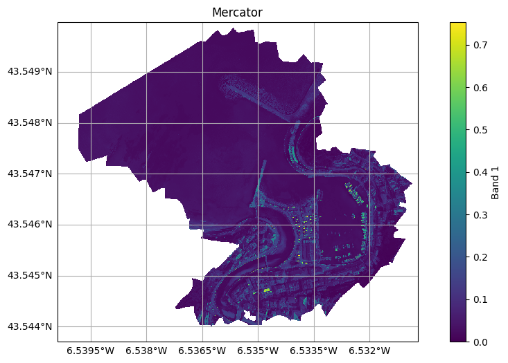
Mask using geometries#
[12]:
import geopandas as gpd
raster : image.Image = load_image()
shapes = gpd.read_file(r"D:\UAVs\data\shapefiles\sand_area\sand_area.shp").to_crs(raster.crs).geometry
shapes
[12]:
0 POLYGON ((699195.761 4824519.942, 699175.557 4...
1 POLYGON ((699121.654 4824576.045, 699125.855 4...
Name: geometry, dtype: geometry
[13]:
plot_band(raster, "Band 1")
raster.geometry_mask(shapes)
plot_band(raster, "Band 1")
[13]:
<GeoAxes: >
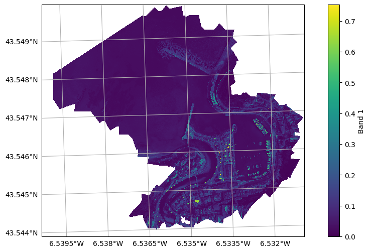
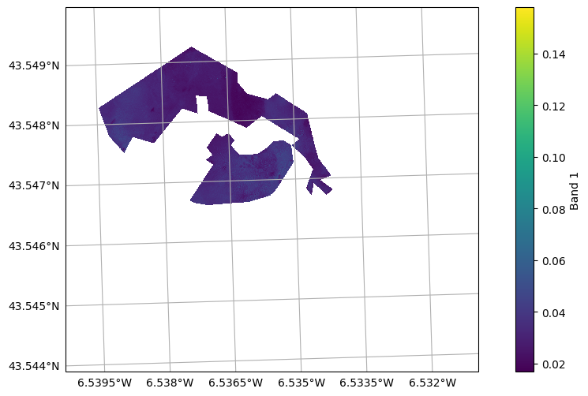
Delete empty rows & cols#
[14]:
raster.dropna()
plot_band(raster, "Band 1")
[14]:
<GeoAxes: >
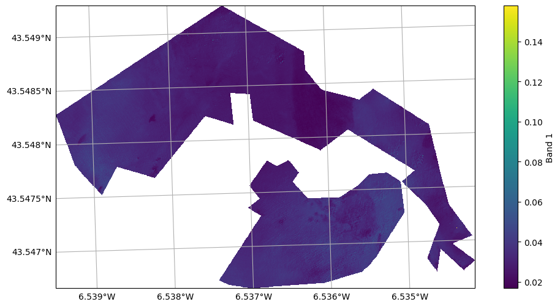
Clip by geometry#
[15]:
raster : image.Image = load_image()
plot_band(raster, "Band 1")
raster.clip(shapes)
plot_band(raster, "Band 1").add_geometries(shapes, edgecolor = 'red',
facecolor = 'none', crs = plot.get_projection(raster.crs))
[15]:
<cartopy.mpl.feature_artist.FeatureArtist at 0x1eda5b915d0>
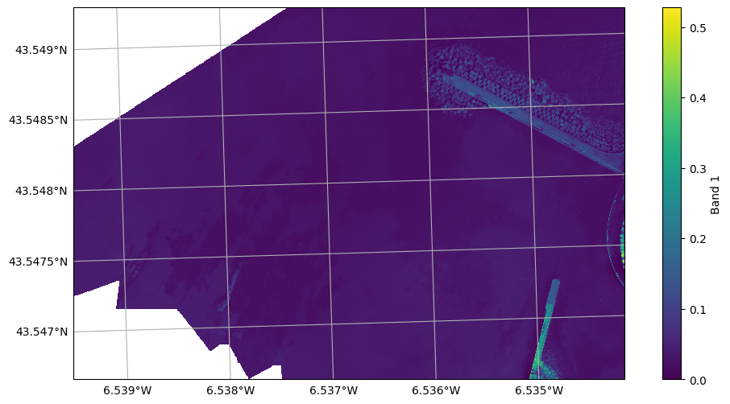
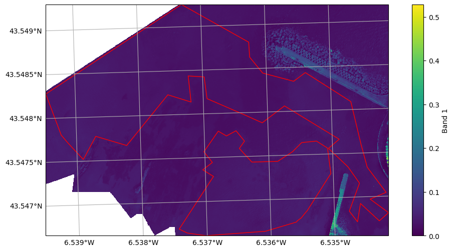
Align 2 rasters#
Load and downsample for fast processing
[16]:
filename_1 = r"D:\UAVs\data\rasters\downsample\20230426_nan_average_downsampling_x5_y5.tif"
filename_2 = r"D:\UAVs\data\rasters\downsample\20230525_nan_average_downsampling_x5_y5.tif"
raster_1 : image.Image = reader.open(filename_1)
raster_2 : image.Image = reader.open(filename_2)
raster_1.resample(scale = 2, downscale = True)
raster_2.resample(scale = 2, downscale = True)
print(raster_1.transform)
print()
print(raster_2.transform)
| 0.66, 0.00, 698703.43|
| 0.00,-0.66, 4824831.33|
| 0.00, 0.00, 1.00|
| 0.79, 0.00, 698650.38|
| 0.00,-0.79, 4824866.10|
| 0.00, 0.00, 1.00|
Show Band 1 prior to alignment
[17]:
plot_band(raster_1, "Band 1")
plot_band(raster_2, "Band 1")
[17]:
<GeoAxes: >
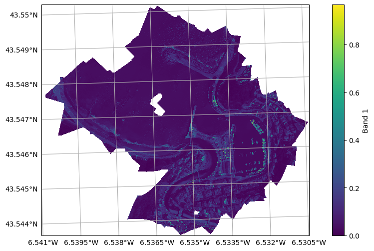
Alignment
[18]:
raster_1.align(raster_2)
print(raster_1.transform)
print()
print(raster_2.transform)
plot_band(raster_1, "Band 1")
plot_band(raster_2, "Band 1")
| 0.79, 0.00, 698650.38|
| 0.00,-0.79, 4824866.10|
| 0.00, 0.00, 1.00|
| 0.79, 0.00, 698650.38|
| 0.00,-0.79, 4824866.10|
| 0.00, 0.00, 1.00|
[18]:
<GeoAxes: >
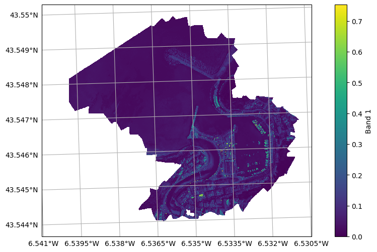

Plots#
Single Band#
[19]:
raster : image.Image = load_image()
raster.resample(scale = 2, downscale = True)
fig, axs = plot.get_geofigure(raster.crs, len(raster.band_names), 1, figsize = (6, 6 * len(raster.band_names)))
for ax, band_name in zip(axs, raster.band_names):
ax, mappable = plot.plot_band(raster, band_name, ax = ax, vmax = 0.1)
fig.colorbar(mappable, label = band_name, shrink = 0.6)
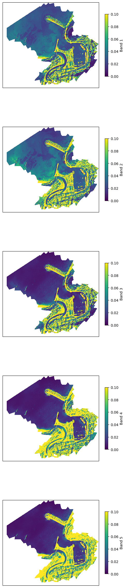
RGB (True color)#
[20]:
fig, ax = plot.get_geofigure(raster.crs, 1, 1)
ax = plot.plot_rgb(raster, 'Band 3', 'Band 2', 'Band 1', ax = ax, brightness = 15)
ax = plot.add_gridlines(ax)
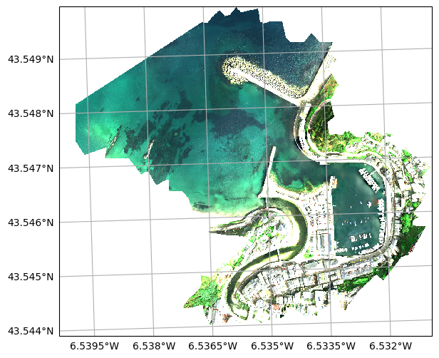
False composite#
[21]:
fig, ax = plot.get_geofigure(raster.crs, 1, 1)
ax = plot.plot_rgb(raster, 'Band 4', 'Band 3', 'Band 2', ax = ax, brightness = 15)
ax = plot.add_gridlines(ax)
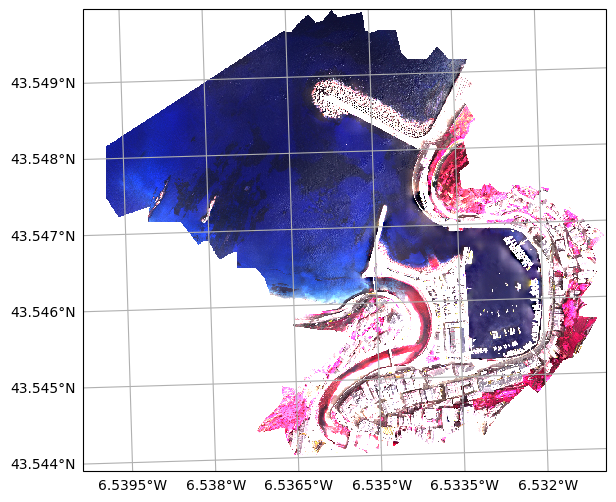
RGB of aligned rasters#
[22]:
fig, axs = plot.get_geofigure(raster_1.crs, 3, 1, (6, 6 * 3))
axs[0] = plot.plot_rgb(raster_1, 'Band 3', 'Band 2', 'Band 1', ax = axs[0], brightness = 15)
axs[1] = plot.plot_rgb(raster_2, 'Band 3', 'Band 2', 'Band 1', ax = axs[1], brightness = 15)
axs[2] = plot.plot_rgb(raster_2, 'Band 3', 'Band 2', 'Band 1', ax = axs[2], brightness = 15)
axs[2] = plot.plot_rgb(raster_1, 'Band 3', 'Band 2', 'Band 1', ax = axs[2], brightness = 10)
axs[0].set_title('April')
axs[1].set_title('May')
axs[2].set_title('April over May')
axs[0] = plot.add_gridlines(axs[0])
axs[1] = plot.add_gridlines(axs[1])
axs[2] = plot.add_gridlines(axs[2])
plt.subplots_adjust(wspace = 0.3)
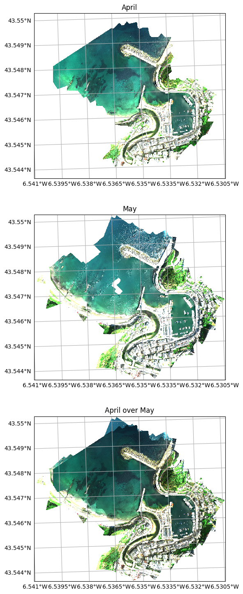